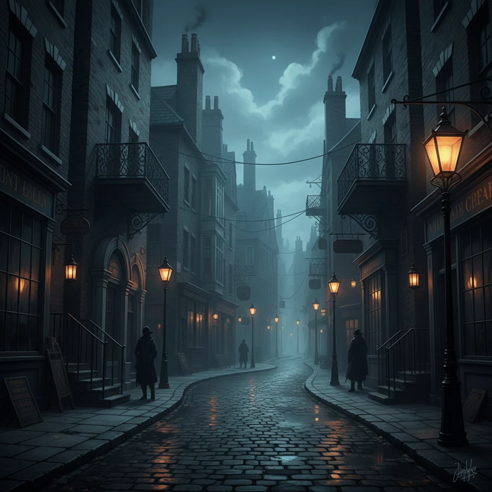

Map
یک تجربهی مدرن، تاریک و پر از راز؛ جایی که نقشه تنها میدان نبرد نیست، بلکه معمایی زنده است. هر خانه، هر گذرگاه و هر مسیر پنهان میتواند جریان نبرد را دگرگون کند و فرصت یا تهدیدی تازه بسازد.
سیستم حرکت
حیاتیدر بازی Unmatched، حرکت یکی از مهمترین بخشهای استراتژی است. جایگیری صحیح مبارزان میتواند مسیر نبرد را کاملاً تغییر دهد.

نقشه بازی
مرموزهر بخش از نقشه دارای ویژگیهای خاص است و میتواند فرصت حمله یا فرار ایجاد کند.